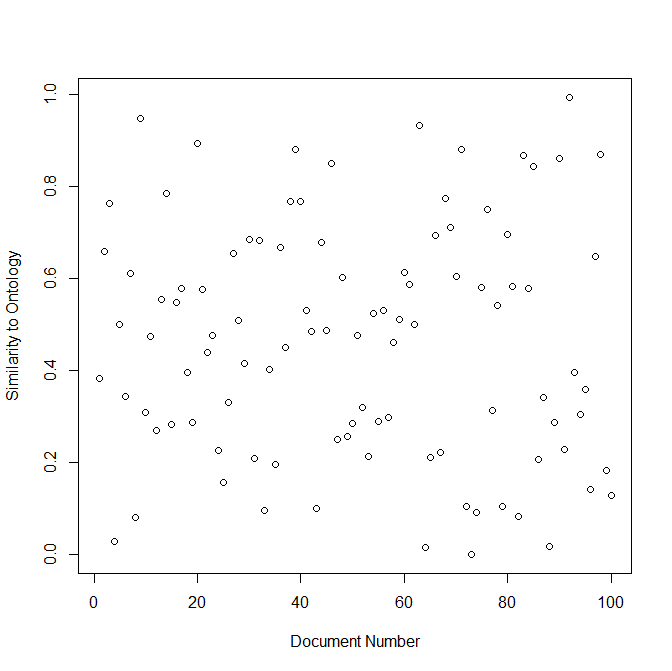
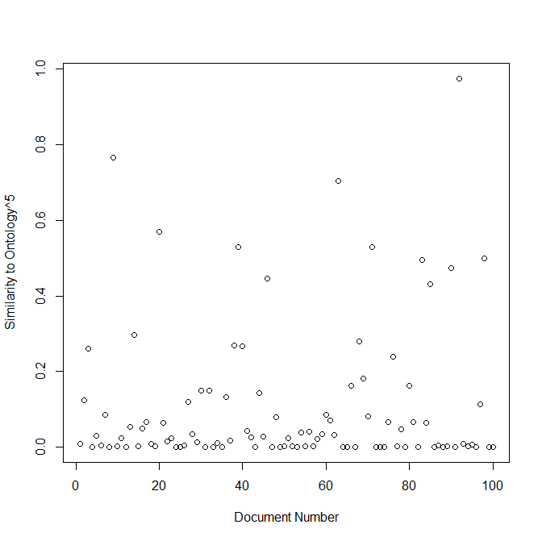
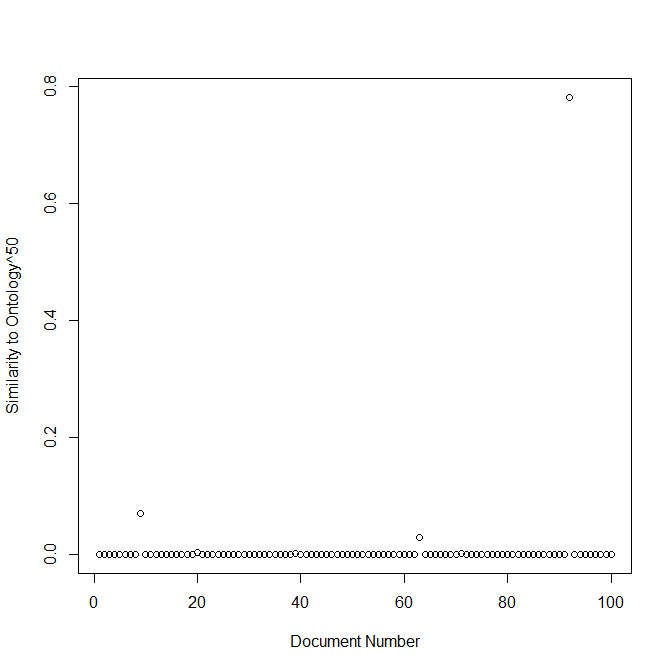
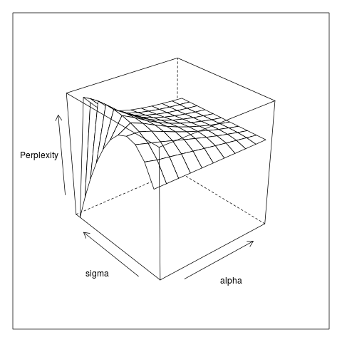

Beta-LM
Bilingual Explicit Topic Adaptation for Language Modelling
John McCrae. Oberseminar 6th November 2011
Noisy channel model
For machine translation we use a noisy channel model
$t̂=argmax_t p(t|f)=argmax_t {p(f|t)p(t)}/{p(f)}$
$t̂=argmax_t p(f|t)p(t)$
Foreign and Translation
$p(f|t)$ is the phrase model (not for today)
$p(f)$ is the language model
N-gram Language Models
We wish to estimate:
$$p(w_1w_2w_3)$$
By Markov assumption:
$$p(w_1w_2w_3)=p(w_1)p(w_2|w_1)p(w_3|w_1w_2)$$
We can estimate this as follows
$$p(w_3|w_1w_2) = {c(w_1w_2w_3)}/{∑↙{w}c(w_1w_2w)}$$
Explicit topics
Explicit semantic analysis
- Explicit Semantic Analysis (Gabrilovich and Markovitch, 2007) is a method for finding similarity between documents
- Generalized to cross-lingual case by Sorg and Cimiano (2008)
- Each Wikipedia page is a "topic"
- $esa_C(d) = ( sim(d,c_1), …, sim(d,c_n) )^\text"T"$
CL-ESA
English Document |
EN Wiki |
Index |
ES Wiki |
Spanish Document |
||

Cat |
↔ |
Gato |
||||
|
|
× |
Dog |
↔ |
Perro |
× |
|
Assets |
↔ |
Activos |
CL-ESA
$sim(d_{en},d_{es}) = cos(φ_{en}(d_{en}),φ_{es}(d_{es}))$
$φ_{en,i}(d_{en}) = ∑_{w ∈ d_{en}} tf.idf(w)$
What if we use this to modify the counts of the language model?
We count each document not as 1.0 but by similarity to input document
Beta-LM
Modified Counting
$c(w_1w_2w_3) = ∑_{d ∈ D} c_d(w_1w_2w_3)$
$c_{\text"beta"}^O(w_1w_2w_3) = ∑_{d ∈ D} sim(O_f,d_f) c_{d_t}(w_1w_2w_3)$
$O_f$ : All source language labels in ontology as bag of words
Similarity Metrics for Beta-LM
Cosine
${x^Ty}/{‖x‖‖y‖}={∑tf^x_w tf^y_w}/{√({∑({tf^x}_w^2) * ∑({tf^y}_w^2)})}$
Jaccard
${|X∩Y|}/{|X∪Y|}={#\{w : tf^x_w > 0 ∧ tf^y_w > 0\}}/{#\{w : tf^x_w > 0 ∨ tf^y_w > 0\}}$
Dice
${2|X∩Y|}/{|X|+|Y|}={2 ×#\{w : tf^x_w > 0 ∧ tf^y_w > 0\}}/{#\{w : tf^x_w > 0\} + #\{w : tf^y_w > 0\}}$
Word Frequencies
An issue is that high-frequency words are not generally indicative of a topic
In Cosine compensate by:
$tf^*_{w,i} = {tf_{w,i} - μ_{w,i}}/{σ_{w,i}}$
Where $μ_{w,i} = p_wn_i$ and $σ_{w,i}^2=n_ip_w(1-p_w)$ due to a Binomial assumption
Where $p_w$ is the probability of $w$ and $n_i$ is the length of the $i^\text"th"$ document
Word Frequencies (cont)
For Dice and Jaccard we use document frequency
DF is the proportion of documents in corpus that contain a word
Hence we define DF-Jaccard as
$df-jaccard(x,y) = {∑_{w ∈ x ∧ w ∈ y} 1 - df_w}/{∑_{w ∈ x ∨ w ∈ y} 1 - df_w}$
Selection
Similarity scores are often too similar!
Solution is to apply selectivity
$sim'(x,y) = {sim(x,y)^{σ}}/{∑_Y sim(x,y')^σ}$
Increases the variation scores
Selection (Example)
Selection (Example)
Selection (Example)
Corpus Loss
Some documents in Wikipedia share zero terms with ontology
But still contain many useful $n$-grams
Compensate as follows:
$sim'(x,y) = (1 - α)sim(x,y) + α$
Results
Mate-finding trials
Take some Wikipedia documents in English/Spanish
Train Beta-LM using one English test document and Spanish Training set
Choose the mate document which maximizes
${∑p(w_i)tf(w_i)}/{||tf(w)||}$
Precision = % Where the mate is the same as Wikipedia interlingual index
Evaluated on 2% of Wikipedia articles (90% train, 10% test)
Mate-finding trials
LDA see Mimno et al. (2009)Perplexity
Perlexity is given as:
$2^{-{1}/{N} ∑_{i=0}^N log(p(w_i|w_0…w_{i-1}))}$
Essentially an average probability score
As a LM probabilities are balanced: higher perplexity means better translation
Training on Wikipedia, using Spanish IFRS to generate English LM
Perplexity
Machine Translation
Evaluating English to Spanish on IFRS. Unigram model
| Method | BLEU | METEOR | NIST | PER |
|---|---|---|---|---|
| Baseline | 0.1774 | 0.2896 | 2.8078 | 0.9212 |
| Cosine | 0.1849 | 0.2975 | 2.8727 | 0.9095 |
| Normalized Cosine | 0.1767* | 0.2887* | 2.8873 | 0.9208 |
| DF-Jaccard | 0.1821 | 0.2936 | 2.8604 | 0.9114 |
| CL-ESA | 0.1767* | 0.2887* | 2.8018* | 0.9201 |
| LDA | 0.1770* | 0.2923 | 2.7790* | 0.9372* |
Conclusion
- Beta-LM adapts language models by source document
- Improves fit of model and translation quality
- Unclear dependency on quality of cross-lingual similarity
- Cross-lingual similarity metrics are weak
- Other challenges:
- Memory-constrained counting
- $n$-gram smoothing
References
- Gabrilovich, E. and Markovitch, S. (2007). Computing semantic relatedness using wikipedia-based explicit semantic analysis. In Proc. of 20th IJCAI
- Sorg, P. and Cimiano, P. (2008). Cross-lingual information retrieval with explicit semantic analysis. In: Working Notes of the Annual CLEF Meeting
- Mimno, D., Wallach, H., Naradowsky, J., Smith, D. and McCallum, A. (2009). Polylingual topic models. In Proc. of EMNLP 2009.
Slides created using reveal.js